À PROPOS
Faisons connaissance 😉
Hey Salut ! avant toute chose, je me présente.
Moi c'est Adnan, J'ai 21 ans, je suis actuellement en formation avec Oppenclassroms pour obtenir mon diplome
de developeur web (bac+2).
Je vous présente mon portfolio qui retrace mon parcour avec Oppenclassroms et les différents projets que j'ai pu faire.
D'ailleurs, je souhaite poursuivre mon cursus avec Oppenclassroms,
pour me lancer dans la formation développeur d'application PHP/Symphony (bac+3).
Aujourd'hui je cherche une entreprise qui souhaite m'accompagner dans cette formation.
MES COMPÉTENCES

 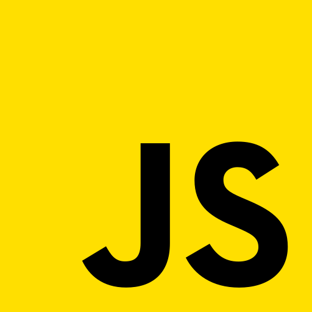
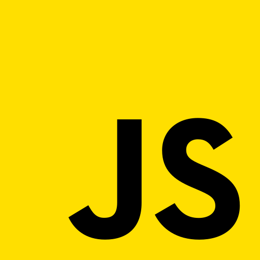

 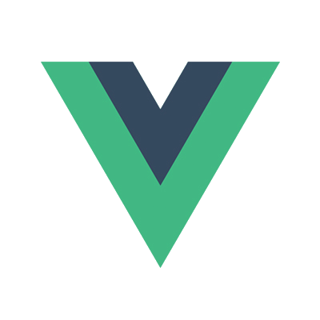
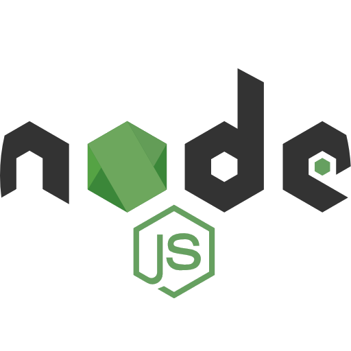
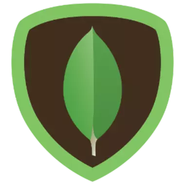
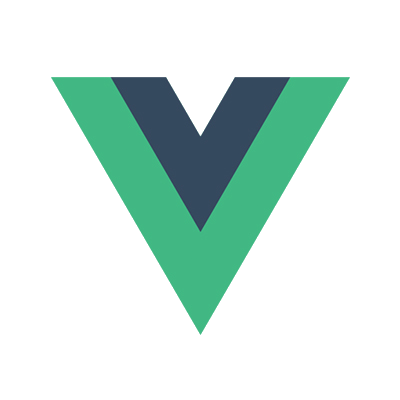
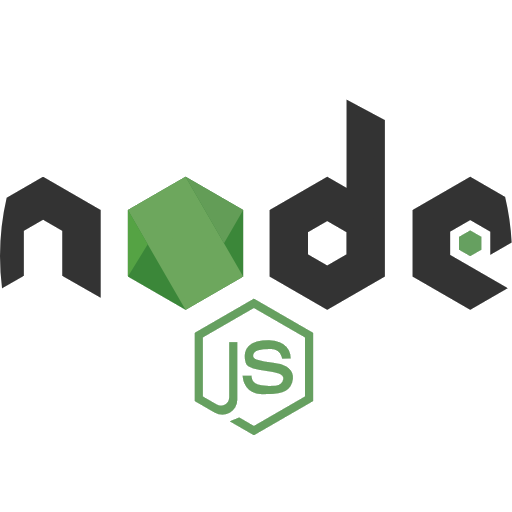
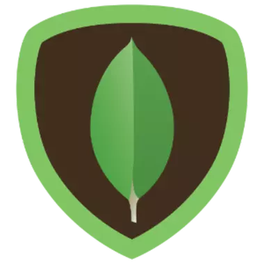


 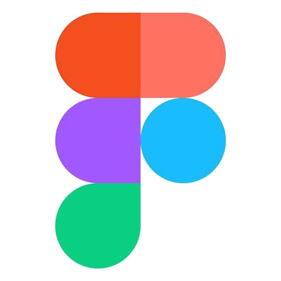
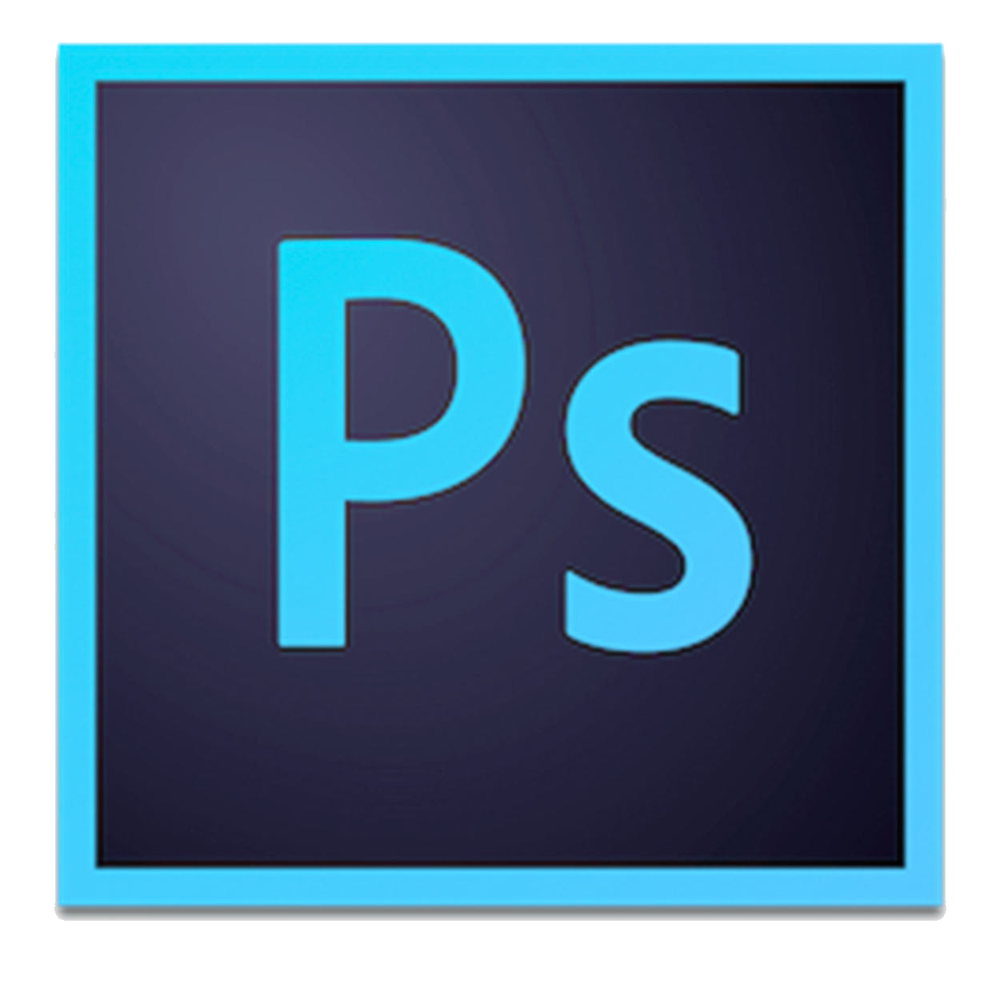
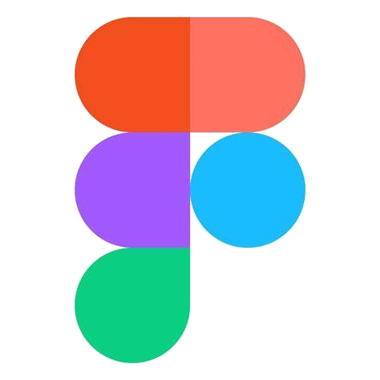
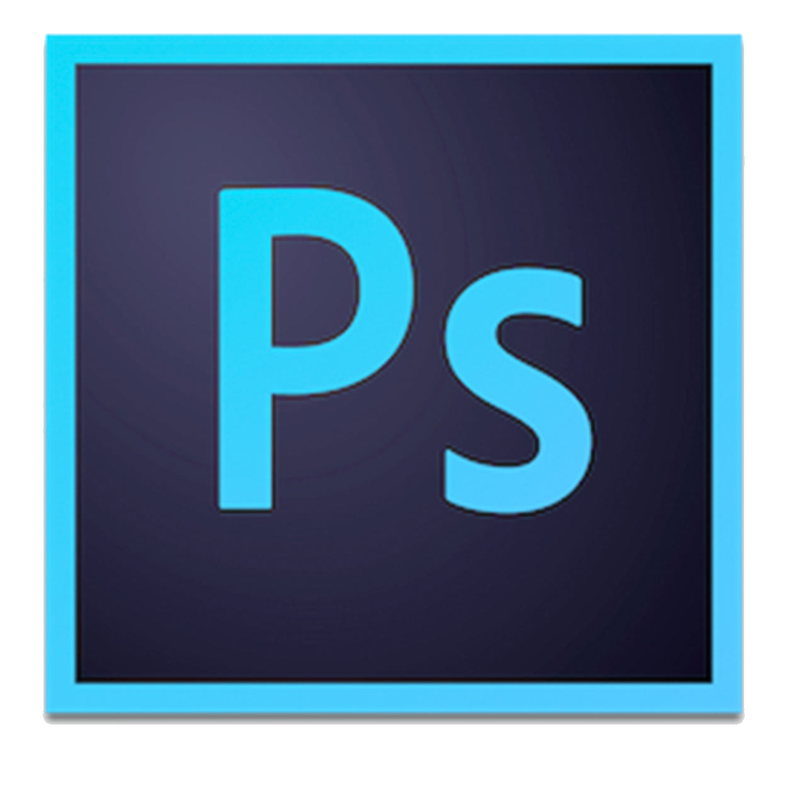
MA FORMATION
 2021-2022
2021-2022
OpenClassrooms :
Développeur Web (bac+2)
Projets :
- Réalisation d'un site en HTML et CSS entièrement responsive.
- Réalisation d'un site (HTML, CSS, SASS, responsive, Git & Github).
- Refonte d'un site web pour améliorer son SEO, son accessibilité et ses performances .
- Réalisation de la partie frontend d'un site e-commerce (JavaScript et API).
- Réalisation d'une API pour une application en ligne. (Node JS, Express, MongoDB,).
- Réalisation d'un réseau social from scratch (Vue JS, Redux, SASS, Node JS, Express, MySQL) .